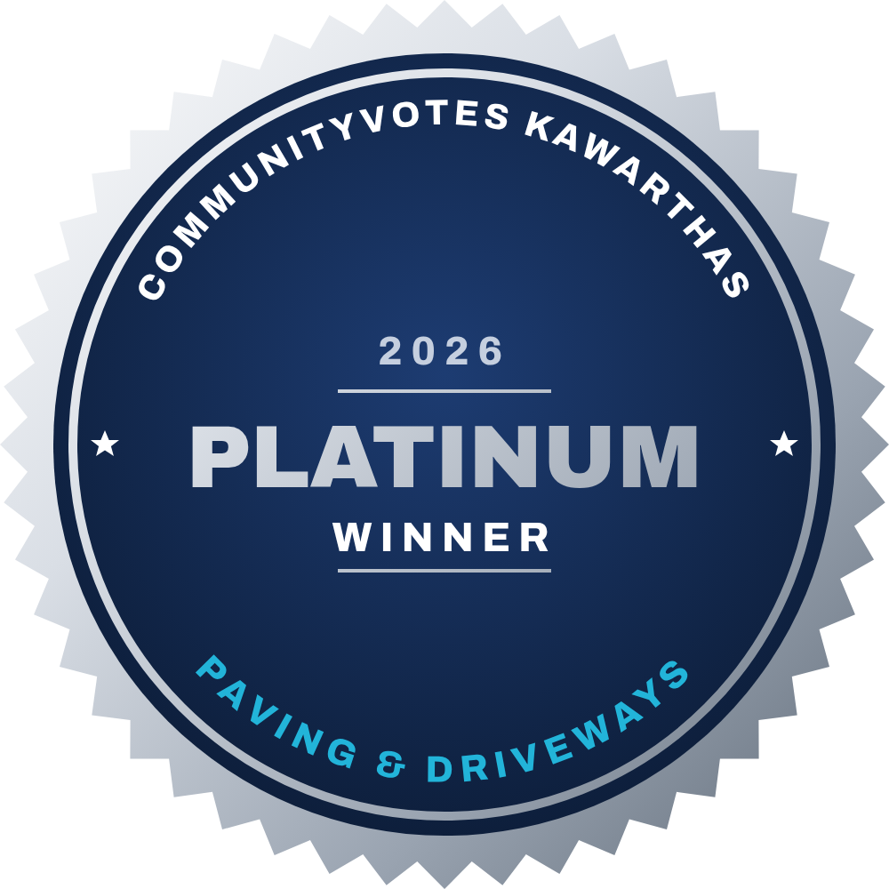
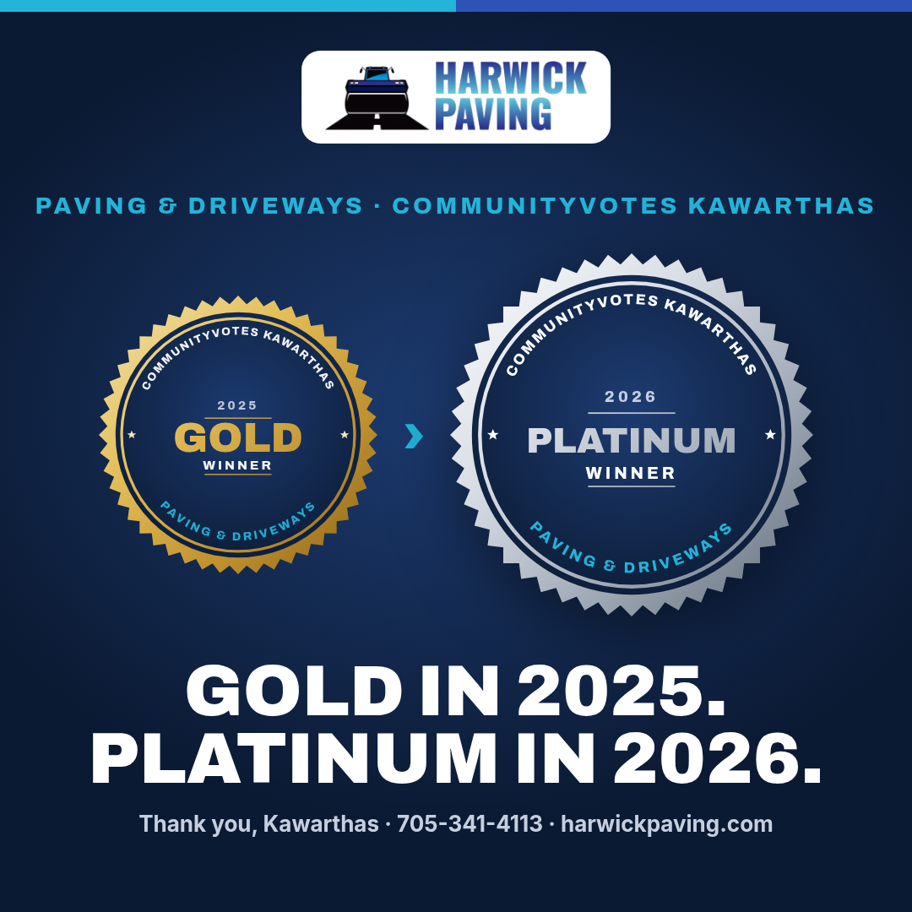
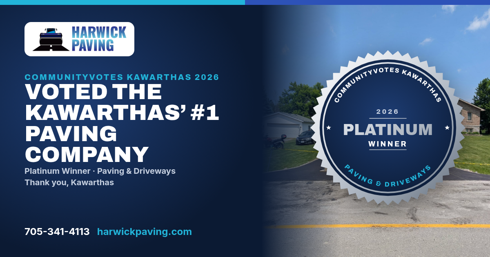
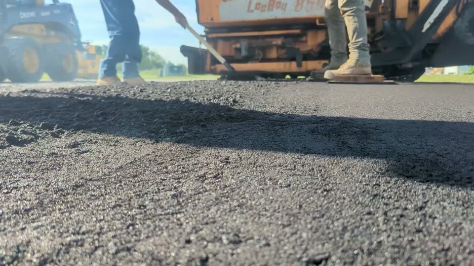

From a new Ontario paving contractor to CommunityVotes Platinum: the field operations, software systems, publishing infrastructure, and local SEO strategy behind the business.

CommunityVotes Platinum 2026In March 2024, Zack Harper founded Harwick Paving Ltd. in Kawartha Lakes, Ontario. In the asphalt paving sector, new entrants face a brutal barrier to entry: entrenched family businesses that have held municipal and regional market share for forty years, combined with extreme seasonal physical demands.
During the Ontario paving season (May to November), a founder cannot sit at a desk. Zack was on the ground daily—operating the asphalt paver, driving the tandem roller, grading gravel sub-bases, and directing crews under 150°C hot mix asphalt.
Instead of hiring an expensive agency or letting marketing die during the busy season, Zack built an end-to-end autonomous customer acquisition, SEO, and publishing apparatus. In less than two years, Harwick ascended from a dead start to winning Gold in the 2025 CommunityVotes Awards, and then the sole Platinum Award in the 2026 CommunityVotes Awards for Paving & Driveways—ahead of long-standing regional legacy contractors.
Section B · Business Growth TimelineIncorporation of Harwick Paving Ltd. Initial capital allocated to heavy machinery (paver, roller, bobcat). Physical operations establish home base in Lindsay, Ontario.
Launch of harwickpaving.com, Google Business Profile verification, initial project photo capture, and immediate local job delivery across Kawartha Lakes.
In its first full operational season, Harwick is voted Gold Winner in the Kawarthas CommunityVotes for Paving & Driveways, proving community momentum.
Deployment of dedicated localized service hubs (Lindsay, Bobcaygeon, Fenelon Falls, Peterborough, Cannington, Woodville, Beaverton) and 15+ in-depth educational articles.
Harwick takes top honours as the sole Platinum Winner in the Kawarthas, finishing ahead of multi-decade competitors Cameron Paving and Rosedale Paving.
Search engines and local commercial clients don't trust claims on a single website; they look for multi-surface verification. Zack engineered a unified citation matrix with strict NAP (Name, Address, Phone) consistency across Canadian registries:
Sole Platinum Winner, Kawartha Lakes Paving & Driveways. Verified independent voter ballot.
CID 1128888734498916462. Primary local destination for high-intent mobile search inquiries.
Verified regional listing demonstrating consumer trust, business legitimacy, and dispute-free standing.
Listing ID 104593924. High-domain-authority directory providing persistent NAP citation signals.
Lindsay & District Chamber of Commerce. Verified active member status renewed through 2027.
Verified customer review hub linking directly to verified projects and real contractor profiles.
In rural Ontario, generic search terms like "paving contractor" lose to local queries. A homeowner in Bobcaygeon wants an asphalt contractor familiar with Canadian Shield rock bases, while a commercial plaza in Peterborough needs heavy commercial parking lot drainage.
Harwick deployed 8 dedicated regional hubs. Each page was authored with custom sub-base engineering specifications, actual localized photography, and zero duplicate boilerplate:
Primary Intent: Residential driveway paving, sub-base excavation, municipal culvert tie-ins.
Engineering Context: Heavy clay subgrade requiring minimum 8" compacted Granular A base to prevent frost heaves during winter freeze-thaw cycles.
Primary Intent: Waterfront cottage access roads, steep-grade driveways, rock-ledge preparation.
Engineering Context: Shallow limestone bed requires precision crown grading and specialized runoff channels to protect water tables.
Primary Intent: Extended rural lanes, estate paving, heavy truck turnaround aprons.
Engineering Context: High frost penetration zone; focus on 3" compacted HL3 hot-mix asphalt over geogrid stabilization.
Primary Intent: Commercial parking lot paving, catch basin rebuilds, mill-and-pave resurfacing.
Engineering Context: Heavy axle load calculations (HL8 base asphalt + HL3 surface course), traffic flow design, and municipal drainage compliance.
Primary Intent: Agricultural equipment yards, farm laneways, heavy tractor pads.
Engineering Context: Industrial-rated base depths engineered to withstand point loads from loaded grain trucks and heavy equipment.
Primary Intent: Lakeside residential developments, seasonal resurfacing, asphalt patching.
Engineering Context: High water table soil stabilization; engineered crown slopes preventing standing pooling water.
While typical paving companies post once every three months, Harwick operated a high-velocity publication engine: 81+ published YouTube videos, daily Reels across Instagram and Facebook, and 15+ comprehensive technical guides (e.g. The Complete Guide to Driveway Paving in Kawartha Lakes).
The Factual Verification Engine: AI generation without controls destroys contractor credibility. Zack authored a strict 3-round mechanical verification gate against a single source of truth (facts.md). The pipeline checked every video description, caption, and tag against approved service boundaries. If a draft stated an unapproved guarantee, claimed an untrue crew size, or hallucinated sealcoating, the system automatically rejected it. Zero drift ever reached the public.
The marketing machine ran as an integrated operational loop, freeing the human operator to run paving operations in the field:
Photos, GPS coordinates, compaction readings, and asphalt mix batch receipts collected on-site.
3-round automated rule check against facts.md. Disallows hallucinations, wrong warranties, or fake claims.
39 systemd timers execute weekly keyword rotation, YouTube uploads, Meta Reels, and rank checks.
Captured inbound quote requests, regional trust authority, and CommunityVotes Platinum.
Explore the Technical Architecture → SYS-10 View Harwick Route Field Map → SYS-09
Section G · The Evidence VaultEvery accomplishment claimed here is backed by primary documentary evidence:
Because platforms geofence search results and hide organic reach behind admin logins, this vault collects verified documentary proof of public recognition and field execution.

Official CommunityVotes Kawarthas records proving the progression from second-tier Gold in year one (2025) to sole category Platinum in year two (2026).

Certified award banner for Paving & Driveways, finishing ahead of multi-generational competitors Cameron Paving and Rosedale Paving.

Actual job site execution in Kawartha Lakes: operating the asphalt paver, maintaining material temperature, and establishing clean compaction grades.
The software industry is filled with AI developers building theoretical tools for industries they have never stepped foot into. Conversely, physical construction businesses are routinely exploited by digital marketing agencies charging thousands a month for generic templates and useless impressions.
Building Harwick Paving proved that when deep technical engineering is placed in the hands of the actual equipment operator, the result is unfair competitive advantage. The software solves real operational pain points because the engineer experiences them at 6:00 AM on the job site.
The fact that an independent, self-funded paving startup conquered the top regional award and dominated local search in under two years is the definitive proof that Zack's AI systems deliver real-world commercial results.